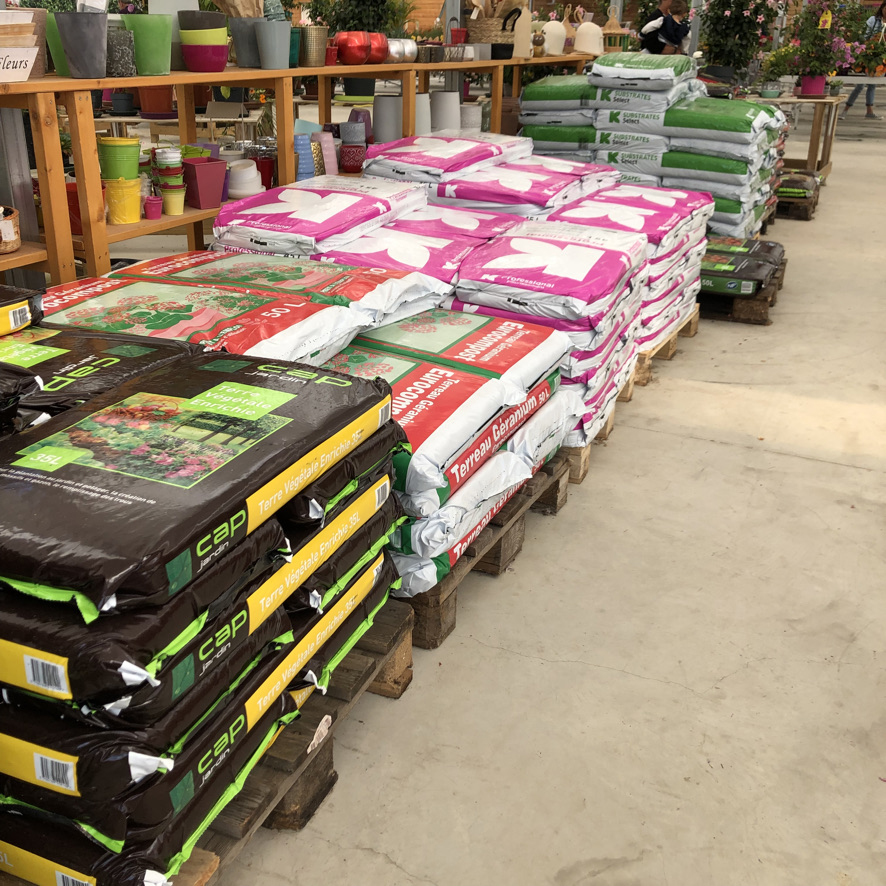
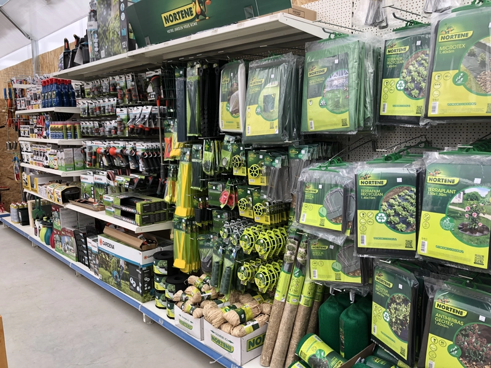
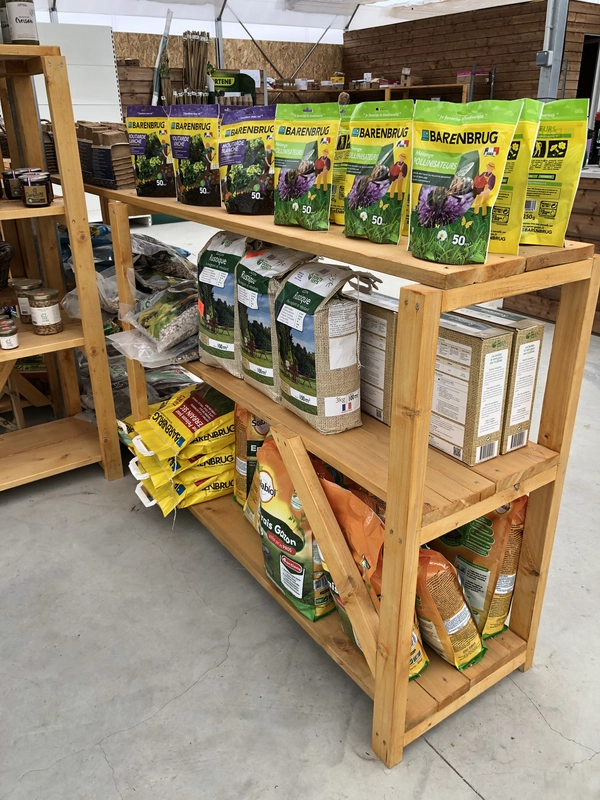
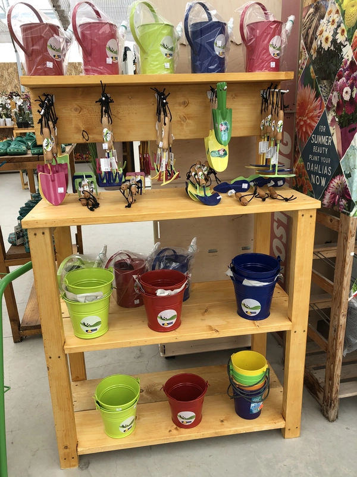
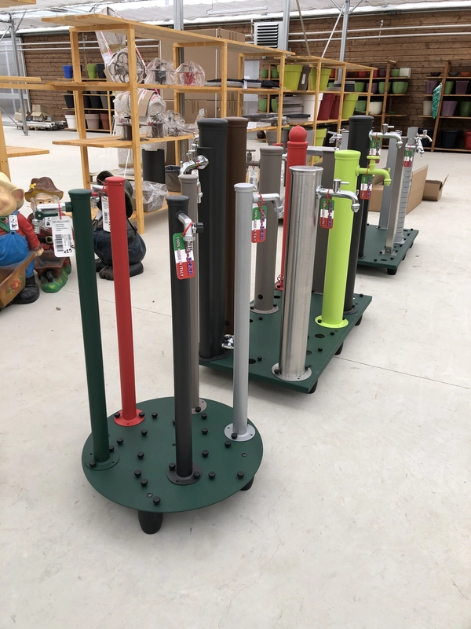
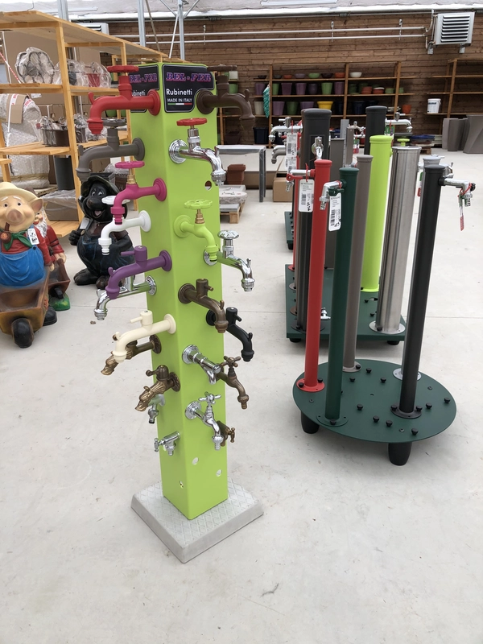
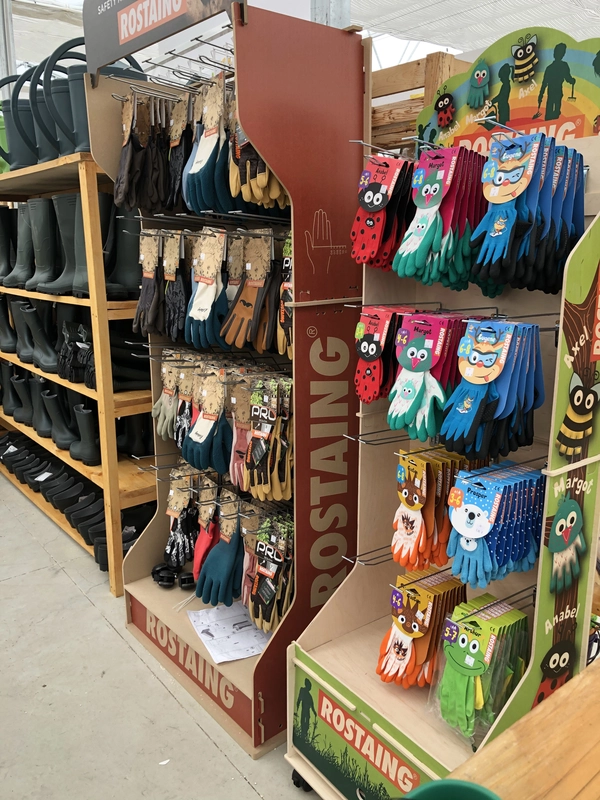

Jardinerie


Engrais et terreaux
Vous trouverez au Temple des Lilas, du terreau professionnel, ou du terreau enrichi d’engrais de très grande qualité. Mais vous découvrirez aussi des engrais BIO, pour nourrir vos plants et améliorer le rendement de vos cultures. Laissez-vous conseiller lors de votre visite aux serres !
Accessoires, outillage, équipement
Vous trouverez un vaste choix de matériel et accessoires pour jardiner. Chaussures, gants, arrosoirs, outils, mobilier de jardin, jeux pour enfants… Une offre qui se renouvelle en permanence afin de répondre à toutes vos attentes.
Nos produits en images




